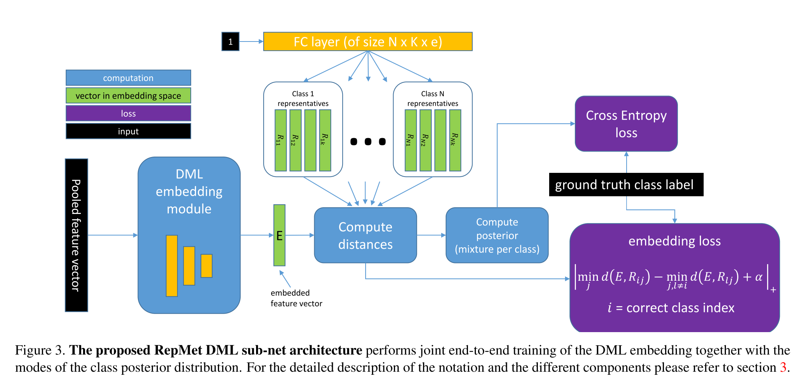
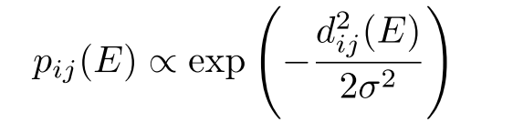
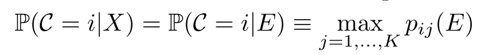

URL: https://arxiv.org/abs/1806.04728
这是CVPR2019的论文了，用metric learning来做few shot的，作者在论文里主要提了一个插件subnet可以用来替换掉分类任务或者定位任务中的class分支。下面这张图可以比较好的阐述问题：

因为论文所提的这个结构是一个subnet，可以无缝的插入到现有的网络结构中，所以它的输入通常是具体的feature，对于检测任务来说就是ROI的feature，输入的feature首先会经过一个embedding module，论文中对于分类任务这个embedding module就是2层FC，对于检测任务就是3层FC，这样就可以把输入的feature压缩到很小的维度(e), 再来看论文中提出的核心概念(‘representatives’), 作者把每一个类别抽象成k个mode，每个mode定义为e长度的vector(为了和embedding module保持一致)，具体实现的时候就是一个N x k x e大小的fc在具体操作的时候reshape一把就好，这个fc输入恒为1。
得到这些信息之后就可以计算距离了，embedding之后的结果和representatives直接相乘就可以得到一个N x k的结果，默认服从高斯分布, 这样可以得到每一个class对应的每一个mode的概率:

那么embedding之后的feature或者输入feature对应这些具体类别的概率呢, 取mode里最大的概率:

然后这篇论文不太好理解的地方是模型的训练，对于few shot检测来说，训练依然服从c way k shot这样的采样逻辑来小规模训练，每次训练的时候会用新类别的embedding结果直接替换掉原来的representatives进行fine tune学习。可能这一步就是针对小样本学习设定的。